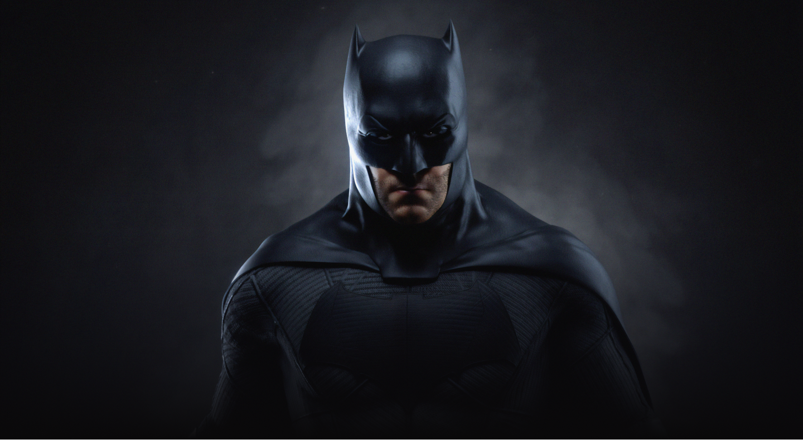
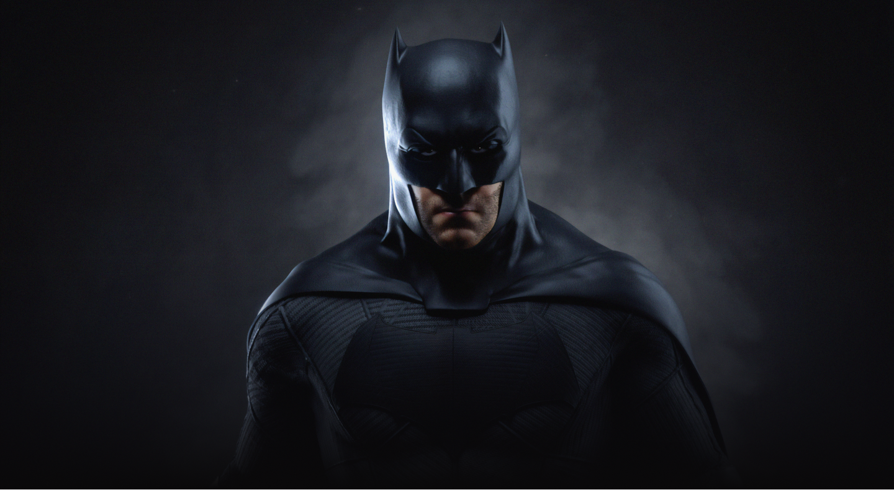

В главных ролях:
- Роберт Паттинсон
- Зои Кравиц
- Колин Фаррелл
- Питер Сарсгаард
- Пол Дано
- Энди Серкис
- Джеффри Райт
- Джон Туртурро
- Макс Карвер
- Кон О’Нилл
Предстоящий американский супергеройский фильм, основанный на одноимённых комиксах издательства DC Comics. Картина будет выпущена компанией Warner Bros. и будет перезагрузкой всех фильмов о Бэтмене.
Фильм является десятым по счёту фильмом из Расширенной вселенной DC. Режиссёром и сценаристом фильма выступит Мэтт Ривз, а главную роль исполнит Роберт Паттинсон.
Разработка
В октябре 2014 года студия Warner Bros. объявила, что в разработке находится сольный фильм о Бэтмене, роль которого вновь исполнит Бен Аффлек. В июле 2015 года сообщалось, что Аффлек ведёт переговоры со студией по поводу постановки фильма и совместного написания сценария с Джеффом Джонсом.
После выхода фильма «Бэтмен против Супермена: На заре справедливости» руководитель агентства WME Патрик Уайтсел подтвердил, что Аффлек написал сценарий для сольного фильма о Бэтмене и в настоящий момент его рассматривают студия и DC. В мае 2016 года Джереми Айронс подтвердил, что он появится в фильме про Тёмного Рыцаря.
Comic-Con в Сан-Диего в июле 2016 года было официально подтверждено, что Аффлек станет режиссёром картины. В августе 2016 года на одной из страниц Аффлека в социальных сетях был опубликован тестовый материал, в котором был показан персонаж Детстроук. 8 сентября 2016 года Джефф Джонс подтвердил, что Джо Манганьелло сыграет наёмника Слейда Уилсона, который, возможно, станет главным злодеем фильма.
Тут скоро появятся рецензии
Тут скоро появятся премьеры
Роберт Паттинсон, Зои Кравиц,
Энди Серкис, Питер Сарсгаард,
Энди Серкис, Колин Фаррел,
Пол Дано, Джеффри Райт,
Джон Туртурро, Кон О’Нилл,
Макс Карвер, Чарли Карвер,
Алекс Фернс, Марк Киллин,
Эми Клер Билс, Бернард Коллако,
Эллиот Уоррен, Jayme Lawson,
Бернард Коллако, Тони Маккарт,
Джил Перес-Абрахам, Родриг Андрисан,
Тут скоро появятся награды
1. "Бэтмен" был создан актером Бобом Кейном и писателем Биллом Фингером. Впервые он появился как "Бэт-мен" в детективных комиксах в мае 1939.
"Бэтмен" был создан актером Бобом Кейном и писателем Биллом Фингером. Впервые он появился как "Бэт-мен" в детективных комиксах в мае 1939.
2. Интересно, что до недавнего времени Билла Фингера не ассоциировали с созданием Бэтмена, хотя именно он придумал идею личности Бэтмена, его костюм, город Готэм и большинство персонажей в истории.
Интересно, что до недавнего времени Билла Фингера не ассоциировали с созданием Бэтмена, хотя именно он придумал идею личности Бэтмена, его костюм, город Готэм и большинство персонажей в истории.
3. Первоначально Бэтмен проживал в Нью-Йорке, только потом его перенесли в город Готэм.
Первоначально Бэтмен проживал в Нью-Йорке, только потом его перенесли в город Готэм.
4. Готэм – маленькая деревенька в Ноттингемшире, Англия, но у нее богатое наследие, может быть поэтому в честь нее назвали город в комиксах DC.
Готэм – маленькая деревенька в Ноттингемшире, Англия, но у нее богатое наследие, может быть поэтому в честь нее назвали город в комиксах DC.
5. Не только Готэм существует в реальной жизни, но и Бэтмен – это город в Турции! Мэр этого города, Хусейн Калкан, даже пытался подать в суд на Warner Bros. из-за того, что они использовали имя города без его разрешения.
6. Мультсериал «Бэтмен» рисовали на черном фоне, чтобы передать мрачную атмосферу города.
Мультсериал «Бэтмен» рисовали на черном фоне, чтобы передать мрачную атмосферу города.
7. Робин должен был появиться всего один раз, а потом исчезнуть навсегда. Все потому, что Джек Лейбовиц, редактор комиксов о Бэтмене, был против идеи подростка, борющегося с гангстерами.
Робин должен был появиться всего один раз, а потом исчезнуть навсегда. Все потому, что Джек Лейбовиц, редактор комиксов о Бэтмене, был против идеи подростка, борющегося с гангстерами.
8. Бэтмен боролся с лихорадкой Эбола в 90-х годах, когда о ней еще практически никто не слышал. Робин чуть не погиб от нее.
Бэтмен боролся с лихорадкой Эбола в 90-х годах, когда о ней еще практически никто не слышал. Робин чуть не погиб от нее.
9. На самом деле, Робина убили фанаты Бэтмена. В 1988 году у читателей спросили, как бы они хотели распорядиться дальнейшей судьбой Робина и большинство (5343 из 10000) проголосовали за его смерть. После этого авторы комиксов сразу же его убили.
На самом деле, Робина убили фанаты Бэтмена. В 1988 году у читателей спросили, как бы они хотели распорядиться дальнейшей судьбой Робина и большинство (5343 из 10000) проголосовали за его смерть. После этого авторы комиксов сразу же его убили.
10. Мельбурн изначально назывался Батмания и его уставным документом был "Договор Бэтмена"
11. Университет "Виктория" в Канаде предлагает целый курс по Бэтменологии.
Университет "Виктория" в Канаде предлагает целый курс по Бэтменологии.
12. Во время съёмок "Бэтмена. Начало" на улицах Чикаго кто-то врезался в Бэтмобиль. Позднее водитель признался, что он был пьян и подумал, что началось вторжение инопланетян.
Во время съёмок "Бэтмена. Начало" на улицах Чикаго кто-то врезался в Бэтмобиль. Позднее водитель признался, что он был пьян и подумал, что началось вторжение инопланетян.
13. Лечебница Аркхэм была названа в честь одноименного заведения в вымышленном городе Аркхэм, Массачусетс, упоминаемого в произведениях Говарда Лавкрафта. А больница в произведениях Лавкрафта, в свою очередь, основана на реальной психбольнице “The Danvers State Hospital” в штате Массачусетс.
Лечебница Аркхэм была названа в честь одноименного заведения в вымышленном городе Аркхэм, Массачусетс, упоминаемого в произведениях Говарда Лавкрафта. А больница в произведениях Лавкрафта, в свою очередь, основана на реальной психбольнице “The Danvers State Hospital” в штате Массачусетс.
14. В ограниченной серии комиксов Marvel Бэтмен и Росомаха были объединены в один отряд под названием "Темный Коготь".
В ограниченной серии комиксов Marvel Бэтмен и Росомаха были объединены в один отряд под названием "Темный Коготь".
15. Марка автомобиля Брюса Уэйна в трилогии "Бэтмен" - Ламборджини, а ее модель - Мурселаго, что в переводе с испанского означает "летучая мышь".
16. Изначально скетчи, сделанные Бобом Кейном, включали в себя Бэтмена в красном костюме с плащом в форме крыла летучей мыши. Вдохновением для таких зарисовок послужил орнитоптер (летательный аппарат) Леонардо да Винчи.
Изначально скетчи, сделанные Бобом Кейном, включали в себя Бэтмена в красном костюме с плащом в форме крыла летучей мыши. Вдохновением для таких зарисовок послужил орнитоптер (летательный аппарат) Леонардо да Винчи.
17. Бэтмен - это комбинация трех героев. Костюм и личность были вдохновлены фильмом «Шепот летучей мыши» 1930 года. Богатое альтер-эго взяли из фильма «Маска Зорро» 1920 года. Герой комиксов начала 20 века по имени Тень одарил Бэтмена его плащем, двойной личностью и детективными способностями.
Бэтмен - это комбинация трех героев. Костюм и личность были вдохновлены фильмом «Шепот летучей мыши» 1930 года. Богатое альтер-эго взяли из фильма «Маска Зорро» 1920 года. Герой комиксов начала 20 века по имени Тень одарил Бэтмена его плащем, двойной личностью и детективными способностями.
18. Вдохновением для Джокера послужил актер Конрад Фейдт в роли Гуинплен в фильме «Человек, который смеется».
Вдохновением для Джокера послужил актер Конрад Фейдт в роли Гуинплен в фильме «Человек, который смеется».
19. Слово «Бэтмен» используется в армии Британии для обозначения личного слуги офицера. Выходит, что Альфред на самом деле Бэтмен Бэтмена. Что, если у Альфреда есть свой слуга? Значит он Бэтмен Бэтмена Бэтмена!
Новости от reddit про Batman 2021- reddit
Подробные новости о фильме вы можете узнать на русскоязычном сайте-kinorium
А тем кто любят комиксы о фильме The Batman (2021)вот сюда - rucomics
Википедия по Бэтмен`у 2021 - wikipedia
Подпишитесь на обновления